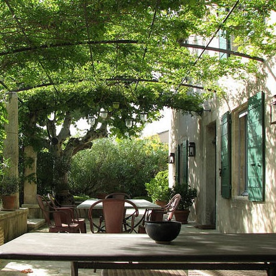
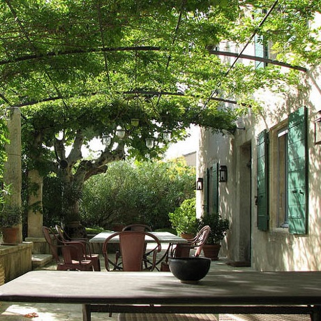
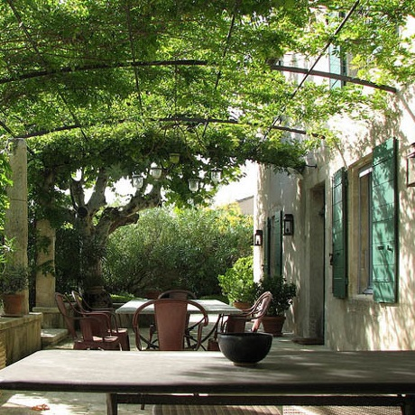

A pochi passi dalle mura del centro storico di Treviso trovate Nina 7, un'accogliente villa del primo'900 immersa nel verde di un tranquillo quartiere residenziale.
Nina 7 dispone di 3 stanze con bagno privato, una sala per la prima colazione, una zona relax e un rigoglioso giardino di begonie.
Per la prima colazione, oltre al tradizionale cornetto e cappuccino, offriamo una varietà di dolci e biscotti fatti in casa, pane fresco, succhi naturali, centrifughe di frutta e verdura con ingredienti Bio provenienti dalle nostre zone. Ilaria attenderà voi viaggiatori e le vostre storie, per farvi sentire come a casa.
Per la prima colazione, oltre al tradizionale cornetto e cappuccino, offriamo una varietà di dolci e biscotti fatti in casa, pane fresco, succhi naturali, centrifughe di frutta e verdura con ingredienti Bio provenienti dalle nostre zone. Ilaria attenderà voi viaggiatori e le vostre storie, per farvi sentire come a casa.
